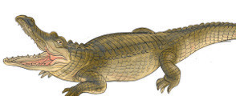
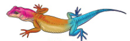
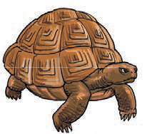

2. Explain the characteristics of the amphibians you have identified.
General characteristics of amphibians
- 1. Most amphibians have four limbs; the fore limbs are shorter than hind limbs.
- 2. They have soft and moist skin which is used for gaseous exchange.
- 3. They also have gills for gaseous exchange during their early stages. At maturity, they use lungs and skin for gaseous exchange.
- 4. Amphibians reproduce by laying eggs in water.
- 5. They have a long tongue which helps them to catch food, such as small insects.
- 6. They are cold-blooded.
Reptiles
Some reptiles, such as crocodiles, turtles, lizards and some snakes live both on land and in water. Other reptiles, such as chameleons, lizards, tortoises and most snakes live on land. Figure 13 shows examples of reptiles.
Crocodile

Lizard

Tortoise

Figure 13: Reptiles